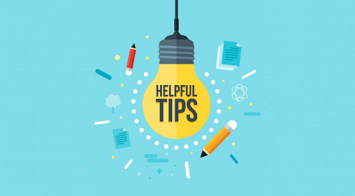

¡Bienvenido a la Sección Docentes! Aquí podrás encontrar todo lo necesario para mejorar la manera de dictar sus clases.
PowerPoint
En esta subsección se enseñará al profesor a crear material visual atrayente e interesante para que los alumnos se mantengan más atentos y hacerles llegar mejor la información.
Herramientas Digitales
Desde que comenzó la pandemia, las clases han sufrido un gran cambio a nivel mundial, es por esto que es necesario usar otras técnicas para que los alumnos aprendan, las cuales pueden ser apps web como Kahoot, Quizizz. En esta subsección se enseñará al docente la variedad de alternativas que tiene y cómo usarlas.
Tips
Hay muchas formas de mejorar una clase, en esta sección habrán tips o ideas para que los profesores puedan mejorar las dinámicas durante sus asignaturas, tales como: cómo hacer preguntas, utilizar gráficos, promover la participación, hablar menos para hacer que los alumnos piensen e implementar la revisión por pares.
